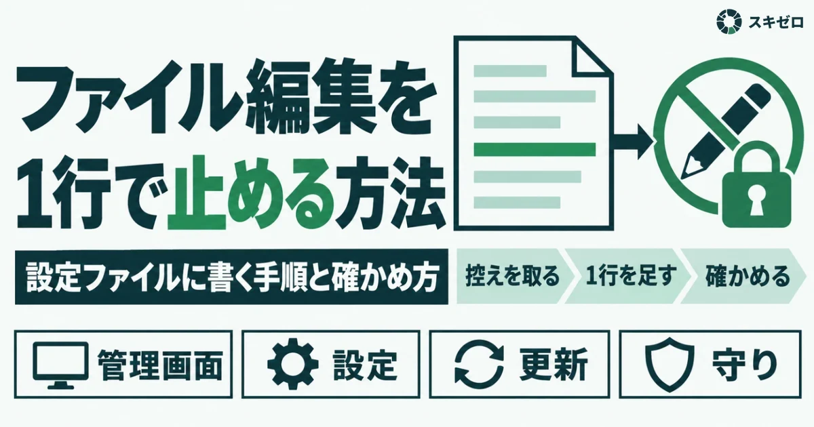
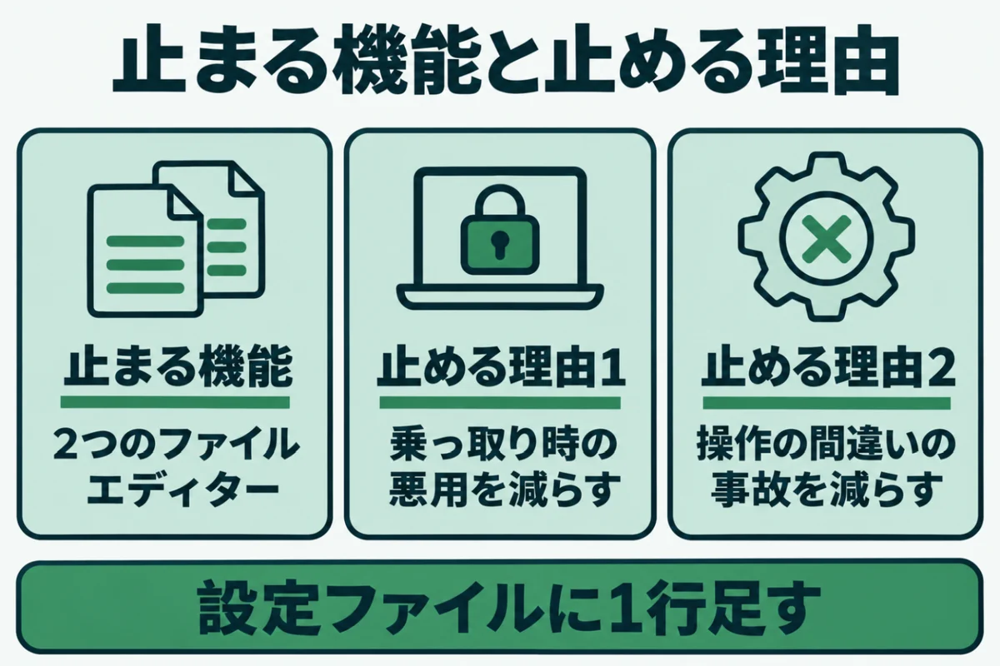
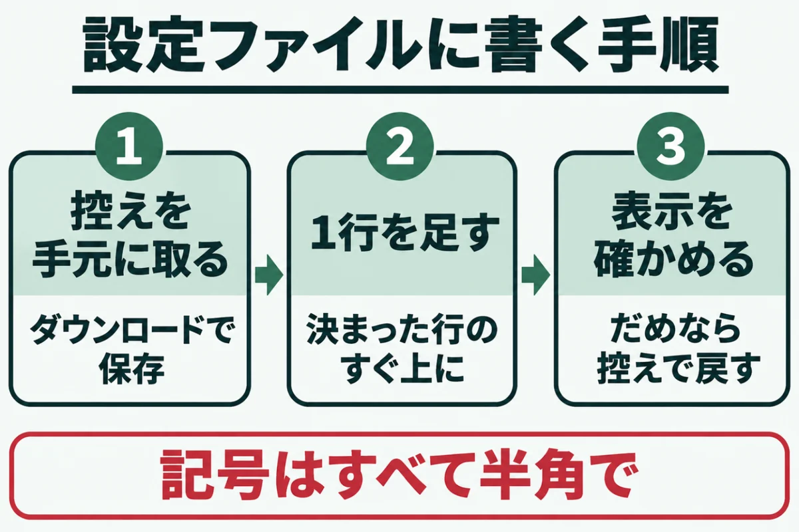
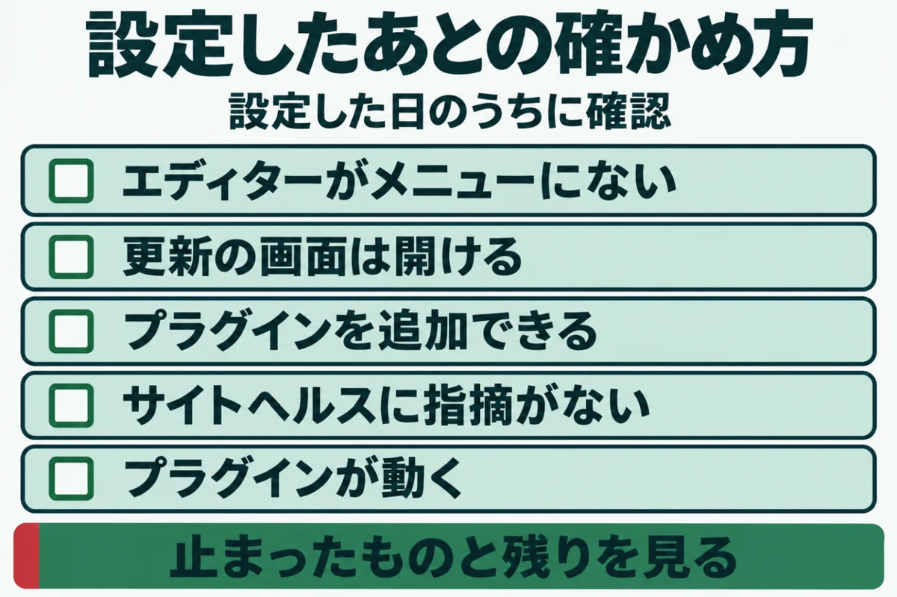
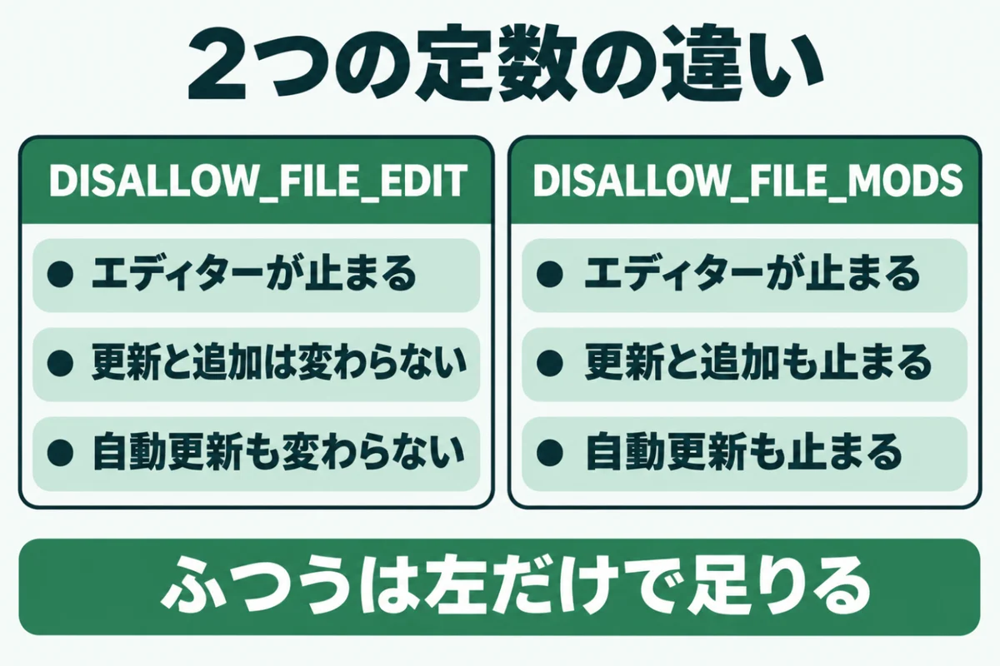
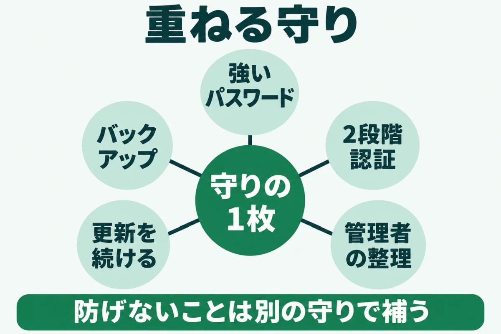

DISALLOW_FILE_EDITとは？WordPressの管理画面からのファイル編集を止める方法手順と確かめ方

WordPressの管理画面からプログラムを書き換えられると聞いて、不安になっていませんか？
管理画面には、テーマやプラグインのファイルを直接編集できる画面があります。便利な反面、管理者のアカウントを奪われると悪用されやすい場所です。
この記事では、1行を足してファイル編集の画面を止める方法を説明します。書く場所、書く前の控え、止めたあとの確かめ方まで順に進めましょう。
内容は、WordPressの公式ドキュメントと本体のプログラムの解説で確かめました。サーバーの管理画面に入れる状態にしてから読み進めてください。
DISALLOW_FILE_EDITとは？止まる機能と止める理由

DISALLOW_FILE_EDITは、管理画面のファイル編集の画面を止める設定です。設定ファイルのwp-config.phpに1行足すだけで働きます。開発の記録によると、WordPress 3.0で加わりました。
公式ドキュメントは、権限の強いアカウントを乗っ取られた場合に備える守りだと説明しています。止めても、記事の投稿やプラグインの更新は今までどおりです。先に、止まる機能と止める理由を押さえましょう。
- 参考：Editing wp-config.php｜WordPress Developer Resources
- 参考：#11306 (Option to disable theme/plugin editor)｜WordPress Trac
止まるのはテーマとプラグインのファイルエディター
WordPressには、ブラウザーからプログラムを書き換えられる画面が2つあります。「テーマファイルエディター」と「プラグインファイルエディター」です。公式ドキュメントによると、従来型のテーマでは「外観」と「プラグイン」の中に並びます。ブロックテーマを使っている場合は、どちらも「ツール」の中に並ぶ形です。初期状態では、管理者の権限でログインした人なら誰でも使えます。変更はすぐ本番に反映され、エディターは控えを作りません。
管理者のアカウントを奪われたときに悪用される
止める一番の理由は、管理者のアカウントを奪われたときの被害を減らすことです。公式の手引きは、このエディターをログインできた攻撃者が最初に使うことの多い道具と書いています。プログラムを書き換えれば、サーバーの上で好きな処理を動かせるからです。パスワードが漏れただけで、サイトの中身まで握られてしまうでしょう。入られたあとの動き方は、別の記事にまとめました。WordPressの管理画面に不正ログインされたときの対処｜すぐやる3つと再発防止を見てください。
操作の間違いでサイトが止まる事故も減らせる
理由の2つ目は、事故の予防です。公式ドキュメントは、熱心な利用者が大事なファイルを触ってサイトを壊す例を挙げました。エディターで誤りを入れてサイトが止まると、同じエディターでは直せなくなります。IPAの20ヶ条も、サーバーの不要なサービスを止めるよう求めているのです。使わない入口は閉じておく、という考え方は同じでしょう。テーマを直接書き換える危うさは、別の記事にまとめました。WordPressのテーマが古いと危ない？更新できないときの対処｜原因の見分け方と入れ替えの判断を見てください。
- 参考：Appearance Theme File Editor Screen｜WordPress.org Documentation
- 参考：安全なウェブサイトの運用管理に向けての20ヶ条｜IPA 独立行政法人 情報処理推進機構
DISALLOW_FILE_EDITをwp-config.phpに書く手順

DISALLOW_FILE_EDITの設定は、控えを取る、1行を足す、表示を確かめるの順に進めます。wp-config.phpは、WordPressのファイルのいちばん上の階層にある設定ファイルです。
データベースにつなぐための情報も、このファイルに入っています。書き間違えるとサイトが開かなくなることがあるので、戻せる準備をしてから触りましょう。作業は、アクセスの少ない時間帯を選ぶと安心です。
先にwp-config.phpの控えを手元に取る
エックスサーバーなら、ファイルマネージャで作業できます。マニュアルによると、FTPのIDとパスワードでログインする形です。サイトのデータは、ドメイン名のフォルダの中の「public_html」にあります。wp-config.phpを選び、「ダウンロード」で手元に控えを保存してください。サーバーの上に別名の写しを残すのは避けましょう。理由は、次の記事にまとめました。WordPressのreadme.htmlは消すべき？公開しなくていいファイルの考え方｜先に確かめたい危ないファイルと止め方を見てください。
1行を足す場所と書き方
ファイルマネージャの「編集」でwp-config.phpを開きます。足す行は「define( 'DISALLOW_FILE_EDIT', true );」です。場所は、「編集が必要なのはここまでです」と書かれた行のすぐ上にします。英語のままのファイルでは、「That's all, stop editing!」が目印でしょう。公式の見本も、独自の値はこの行より上に足すよう案内しました。記号はすべて半角で、公式の書き方のまま入力してください。パソコンで直す場合、Wordのようなワープロは使いません。
保存したらすぐ表示を確かめ、だめなら戻す
保存したら、すぐにサイトの表側と管理画面を開きます。どちらも今までどおり表示されれば、書き込みは成功です。エラーが出たり画面が真っ白になったりしたら、落ち着いて元に戻しましょう。手元の控えをアップロードして上書きすれば、書く前の状態に戻ります。公式ドキュメントは、値を囲む引用符を消していないか見直すよう勧めました。全角の記号やセミコロンの抜けも、あわせて見てください。自分で戻せないときは、サーバー会社か制作会社に相談するのが早道です。
DISALLOW_FILE_EDITを設定したあとの確かめ方

DISALLOW_FILE_EDITを書いたら、止まったものと止まっていないものの両方を確かめます。エディターが消えただけで終わりにすると、思わぬ影響を見落とすからです。
見る点は、メニュー、更新の動き、プラグインの動きの3つになります。どれも管理画面の中で確かめられるので、設定した日のうちに済ませましょう。結果は、作業の記録として日付と一緒に残しておくと安心です。
2つのエディターがメニューから消えたかを見る
管理者のアカウントでログインし、「外観」「プラグイン」「ツール」のメニューを開きます。2つのファイルエディターの項目がなければ、設定は効いている状態です。本体のプログラムは、この定数があるとファイル編集の権限を誰にも認めません。メニューは権限のある人にだけ出る作りなので、項目ごと消えます。コードリファレンスで見るかぎり、サイトヘルスの定数の一覧にこの定数は含まれていません。そのため、メニューで確かめるのが早道でしょう。
- 参考：map_meta_cap()｜WordPress Developer Resources
- 参考：add_submenu_page()｜WordPress Developer Resources
- 参考：WP_Debug_Data::get_wp_constants()｜WordPress Developer Resources
更新とインストールが今までどおりできるかを見る
次に、止まってはいけない機能を確かめます。DISALLOW_FILE_EDITだけなら、更新とインストールの権限は今までどおりです。「ダッシュボード」の「更新」と、プラグインを新しく追加する画面が開けるかを見てください。開けないときは、似た名前のDISALLOW_FILE_MODSが書かれている疑いがあります。「ツール」の「サイトヘルス」も開きましょう。自動更新が無効だという指摘が出ていなければ、問題ありません。
プラグインの動きに変わりがないかを見る
最後に、プラグインの動きを見ます。公式ドキュメントには、この定数で一部のプラグインが影響を受けるという注意書きがあるのです。プラグインの中で、ファイル編集の権限を確かめている場合に起こります。プラグインが動かないときは、この定数が原因の場合があるとも書かれました。設定のあと数日は、フォームの送信や予約など主な機能を試してください。不具合が出たら、足した1行を消して元に戻します。そのうえで、プラグインの開発元に相談しましょう。
DISALLOW_FILE_EDITとDISALLOW_FILE_MODSの違い

よく似た名前の設定に、DISALLOW_FILE_MODSがあります。こちらは、更新とインストールまで管理画面から止める設定です。
止まる範囲が広いぶん守りは固くなりますが、日々の更新のやり方が大きく変わります。会社のホームページでは、ふつうDISALLOW_FILE_EDITだけで足りるでしょう。違いを知ったうえで、自社に合うほうを選んでください。
DISALLOW_FILE_MODSは更新とインストールも止める
公式ドキュメントによると、管理画面でのプラグインやテーマの追加と更新が無効になります。エディターも一緒に止まるので、2つを両方書く必要はないという説明です。本体のプログラムでは、本体・プラグイン・テーマの更新や削除の権限がまとめて認められなくなります。言語のファイルの追加と更新も、同じ扱いでした。記事に使う画像などのアップロードは、対象から外れています。2つの定数で止まる範囲を、表にまとめました。
| 定数 | ファイルエディター | 管理画面からの更新と追加 | 自動更新 |
|---|---|---|---|
| DISALLOW_FILE_EDIT | 止まる | 変わらない | 変わらない |
| DISALLOW_FILE_MODS | 止まる | 止まる | 止まる |
自動更新まで止まる点に注意する
見落としやすいのが、自動更新への影響です。本体のプログラムには、ファイルの変更を望まないなら背景での更新を無効にする、という処理があります。この定数を書くと、弱点を直す小さな更新も自動では入らなくなるのです。サイトヘルスの検査も、自動更新がすべて無効だと指摘する作りになっています。自動更新の考え方は、次の記事にまとめました。WordPressの自動更新は有効にすべき？良い点と注意点｜任せる範囲の決め方と確かめ方を見てください。
- 参考：WP_Automatic_Updater::is_disabled()｜WordPress Developer Resources
- 参考：WP_Site_Health_Auto_Updates::test_wp_automatic_updates_disabled()｜WordPress Developer Resources
ふつうはDISALLOW_FILE_EDITだけで足りる
多くの会社は、管理画面の「更新」から本体やプラグインを上げています。その場合は、DISALLOW_FILE_EDITだけにしましょう。更新の道を残したまま、書き換えの画面だけを閉じられるからです。DISALLOW_FILE_MODSが向くのは、管理画面を使わずに更新する体制があるサイトでしょう。開発の担当者が、確かめたファイルをサーバーへ送って更新する運用などです。体制がないまま入れると、古い版のまま止まってしまいます。保守を任せている場合は、制作会社と相談して決めてください。
DISALLOW_FILE_EDITで防げないことと重ねる守り

DISALLOW_FILE_EDITは、入られたあとの被害を小さくする守りの1枚です。管理画面に入られること自体を防ぐ設定ではありません。
公式の手引きも、止められるのは一部の攻撃だと断っています。何が残るのかを知っておけば、次に打つ手が決まるでしょう。防げないことを2つ見たうえで、重ねたい守りを紹介します。
不正なファイルのアップロードまでは止められない
公式の手引きは、この設定について不正なファイルのアップロードまでは防げないと明記しています。管理者のアカウントを奪った相手は、プラグインを追加する画面を使えるからです。本体のプログラムを見ても、追加の権限はこの定数では変わりません。エディターが消えても、別の道からプログラムを入れられるでしょう。だからこそ、管理者のアカウントを奪われない対策が先に立ちます。心当たりのないプラグインが増えていないかも、ときどき見てください。
サーバー側の入口とプラグインの弱点は別に守る
この定数が閉じるのは、管理画面の中の編集画面だけです。FTPやファイルマネージャからは、今までどおりファイルを書き換えられます。サーバーのパスワードが漏れた場合には効きません。プラグインやテーマの弱点を突いてファイルを置く攻撃も、エディターを通らないので対象外でしょう。IPAの20ヶ条は、管理者権限のアカウントのパスワードが特に狙われやすいと注意しています。サーバーとWordPressの両方で、推測されにくいものに替えてください。
アカウントの守りと更新を重ねる
重ねたい守りは、強いパスワード、2段階認証、管理者の整理、更新、バックアップの5つです。どれも、入られにくくするか、入られても戻せるようにする対策になります。運営者の自社サイトの点検でも、数年前の外注先のアカウントが2つ残っていました。使っていないアカウントは、この機会に消しておきましょう。スキゼロの無料簡易診断は、外から見える8項目を判定するものです。wp-config.phpの中身は外から見えないため、この設定の有無は診断の対象に入りません。
URLを入れるだけで、WordPress本体やプラグイン、ユーザー名の見え方など8項目を無料で判定します。wp-config.phpへの追記など設定の作業は、対策作業（14,800円から・税込）でもお受けしています。
無料で診断するDISALLOW_FILE_EDITに関するよくある質問
DISALLOW_FILE_EDITを設定すると、記事の編集やデザインの調整もできなくなりますか？
できなくなることはありません。この定数で認められなくなるのは、ファイル編集に関する3つの権限だけだからです。投稿や固定ページの編集は、別の権限で動いています。追加CSSも、ファイルエディターとは別の権限で扱われる作りです。ただし、テーマのファイルを直接直す作業は管理画面からできなくなります。その場合は、ファイルマネージャやFTPで作業してください。
設定を元に戻したいときは、どうすればよいですか？
wp-config.phpから、足した1行を消して保存すれば元に戻ります。値の「true」を「false」に書き換えても、エディターは再び使えるようになるでしょう。本体のプログラムが、定数があり、かつ値が真のときだけ止める作りだからです。エディターが要る作業のときだけ外し、済んだら戻す使い方もできます。戻し忘れを防ぐため、外した日と戻した日を記録に残してください。作業の前には、今回と同じように控えを取りましょう。
制作会社がテーマファイルエディターで作業しています。止めても大丈夫ですか？
止める前に、制作会社へ相談してください。黙って止めると、修正の作業が進まなくなるおそれがあります。公式ドキュメントは、手元で編集して試してから反映するほうが安全だと説明しました。エディターの変更は、訪問者が見ている本番にすぐ反映されるからです。FTPやファイルマネージャで作業する形に切り替えられないか、聞いてみましょう。切り替えのあとで、この設定を入れる流れが安心です。
サーバー会社の管理画面から、この設定を入れられますか？
サーバー会社によって違うので、公式のマニュアルで確かめてください。エックスサーバーの「WordPressセキュリティ設定」には、4つの機能が載っています。2026年11月に確かめた時点では、ファイル編集を止める項目はありませんでした。国外からのアクセス制限や、ログイン試行回数の制限などが中心です。そのため、エックスサーバーではwp-config.phpに自分で1行を足します。ほかの会社でも、項目が見当たらなければ同じ方法になるでしょう。
テーマファイルエディターが最初からメニューにありません。なぜですか？
まず、すでに止められていないかを疑いましょう。制作会社が、wp-config.phpに定数を書いていることがあります。DISALLOW_FILE_MODSが入っている場合も、エディターは出ません。複数のサイトを束ねるマルチサイトでは、特権管理者だけに表示される作りです。自分のアカウントが、管理者ではなく編集者などの場合もあるでしょう。wp-config.phpを開き、2つの定数が書かれていないかを見てください。
まとめ
DISALLOW_FILE_EDITは、管理画面の2つのファイルエディターを止める設定です。管理者のアカウントを奪われたときに、プログラムを書き換えられる道を1つ減らせます。
手順は、控えを取り、1行を足し、表示を確かめるの3段階でした。更新まで止まるDISALLOW_FILE_MODSとは使い分け、アカウントの守りと重ねてください。
まずは、今の状態を知るところから。
URLを入れるだけで、数十秒で判定が出ます。登録はいりません。